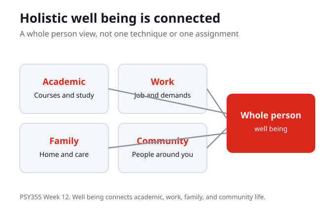
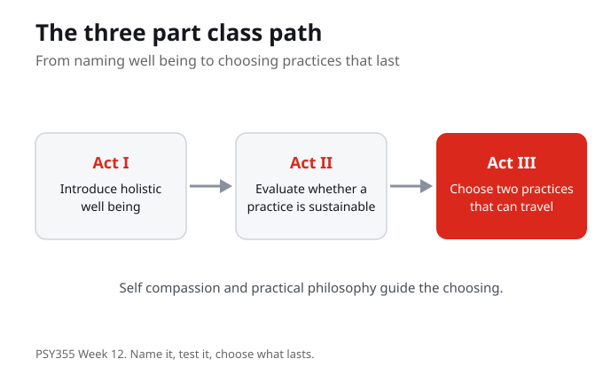
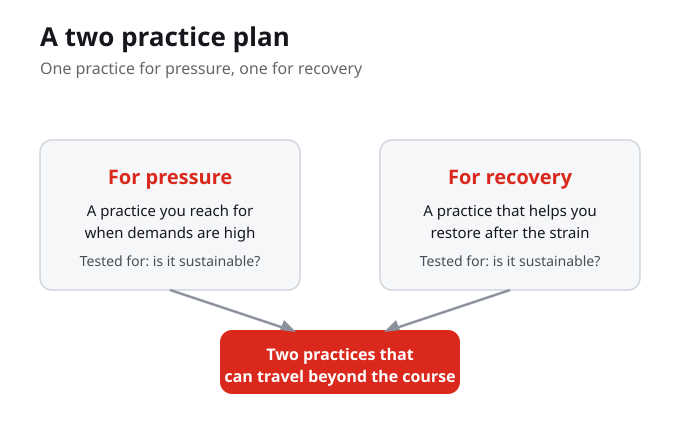

1. Holistic well being, in this week's terms, is best described as:
2. The central question of the week is:
3. Owen (2023) connects contemporary psychology to:
4. Neff (2003) describes self compassion as:
5. Ungar (2011) frames resilience as:
6. To decide whether a coping practice is worth keeping, the week asks you to evaluate whether it is:
7. The low stakes practice activity asks students to build a plan with:
The purpose of this week is to connect psychological theory to practical learning, well being, and resilience. The work stays grounded in course sources and uses everyday academic examples so the concepts can travel beyond class.
By the end of this week you should be able to

This week brings course practices together into a whole person view of well being. Holistic well being is not one technique or one assignment; it is academic, work, family, and community life seen as connected. When students look beyond a single tool, the question changes from how do I do this task to what does my whole life need to keep going. That wider view is the frame for everything that follows.
Holistic well being treats academic, work, family, and community life as connected, so the question moves from one technique to what the whole person needs to keep going.
Looking beyond one technique or one assignment, what does your well being actually require?

Owen (2023) connects contemporary psychology to ancient practical philosophy, treating resilience as something practiced rather than simply possessed. Ungar (2011) adds that resilience is a contextual and cultural process, not a private trait that works the same for everyone. Together they ask us to look at what supports a person and where the model needs context, so the class can move from naming well being to testing which practices actually hold up.
Owen reads resilience as a practiced philosophy and Ungar reads it as a contextual, cultural process, so resilience depends on what supports a person, not on a single technique.
Where does a model of resilience help you, and where does it need the context of your own life?
Neff (2003) describes self compassion as an alternative to harsh self judgment and as a teachable response to difficulty, not a fixed trait. That matters for well being because the way a student treats themselves under pressure shapes whether a practice can be repeated. Self compassion is not lowering the standard; it is the steadiness that lets a person return to the work after a hard moment instead of abandoning it.
Self compassion is a teachable response to difficulty, not a fixed trait, and it is what lets a student return to the work after a hard moment rather than abandon it.
When a task goes badly, what would a more compassionate response let you do next?
The test the week uses is sustainability. A coping practice is only useful if it can be repeated across ordinary academic, work, and family contexts, not just once under ideal conditions. So the question is not whether a practice looks impressive but whether it holds up over time without pretending the barrier is simple. Evaluating sustainability is how students decide which practices are worth keeping.
A coping practice is worth keeping only if it is sustainable, meaning it can be repeated across ordinary academic, work, and family contexts rather than once under ideal conditions.
Take one coping practice you use. Could you repeat it on a hard week, or only on an easy one?

The low stakes practice activity asks students to build a two practice plan: one practice for pressure and one for recovery. The goal is to make the psychology useful without turning the week into a personal disclosure task. Choosing two practices that can travel beyond the course is how holistic well being, practical philosophy, self compassion, and sustainability come together in something a student can actually carry forward.
The capstone is a two practice plan, one for pressure and one for recovery, chosen because they are sustainable and can travel beyond the course.
What is one practice for pressure and one for recovery that you could realistically keep using?
Holistic well being connects academic, work, family, and community life. This week brings course practices together so the question moves beyond one technique or one assignment to what the whole person needs to keep going.
Owen (2023) connects contemporary psychology to ancient practical philosophy, treating resilience as practiced rather than possessed. Ungar (2011) frames resilience as a contextual and cultural process, so the model helps in some places and needs context in others.
Neff (2003) describes self compassion as a teachable response to difficulty, not a fixed trait. It is the steadiness that lets a student return to the work after a hard moment instead of abandoning it, which is what makes a practice repeatable.
The test for any coping practice is whether it is sustainable across ordinary academic, work, and family contexts. The week ends with a two practice plan, one for pressure and one for recovery, chosen because they can travel beyond the course.
Earlier weeks built specific tools for problem solving and help seeking, and they treated each technique on its own terms. Those weeks gave students concrete moves to use when a particular difficulty appeared.
Holistic well being and practical philosophy act as a capstone: they connect academic, work, family, and community life and ask whether a coping practice is sustainable. Owen, Neff, and Ungar frame resilience as practiced, compassionate, and contextual, and students build a two practice plan, one for pressure and one for recovery.
With the whole person view in place, the work turns to revisiting the term's learning: deciding which practices are sustainable enough to travel beyond the course and carrying the central question forward into ordinary academic, work, and family contexts.
Which practice from the course is most likely to travel with you, and what makes it realistic? Use the central question to guide your answer. What does your well being require when you look beyond one technique or one assignment, and which practice could you actually keep using without pretending the barrier is simple?
Your notes save automatically on this device and stay after you close your browser or shut down. Use Save my notes (below) to download a copy you can keep or open on another device.
What does holistic well being ask students to do?
According to Ungar (2011), resilience is best understood as:
Neff (2003) presents self compassion as:
What makes a coping practice worth keeping this week?
Name the main concept Owen, Neff, and Ungar each give us. Read for the argument, not every technical detail, and mark the sentence that best helps you answer the central question about well being.
Take a coping practice you already use and ask whether it can be repeated across ordinary academic, work, and family contexts. Decide whether it is sustainable or only works under ideal conditions, without pretending the barrier is simple.
Choose one practice for pressure and one for recovery that can travel beyond the course. Keep it low stakes; the goal is psychology you can use, not a personal disclosure task.
Owen, J. (2023). Psychological resilience: Connecting contemporary psychology to ancient practical philosophy. Theory and Psychology. DOI: 10.1177/09593543231153820.
Neff, K. D. (2003). Self-compassion: An alternative conceptualization of a healthy attitude toward oneself. Self and Identity, 2(2). DOI: 10.1080/15298860309032.
Ungar, M. (2011). The social ecology of resilience: Addressing contextual and cultural ambiguity of a nascent construct. American Journal of Orthopsychiatry, 81(1), 1 to 17. DOI: 10.1111/j.1939-0025.2010.01067.x.